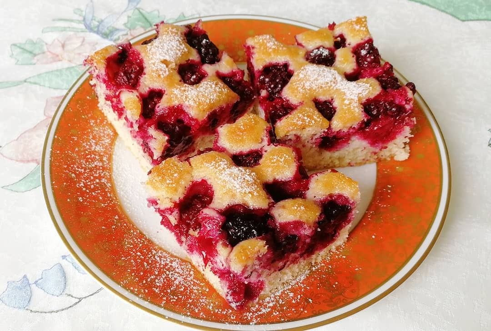

Veľmi chutná bublanina s černicami😋 Keby ste chceli recept, tak vám odporúčam sledovať na instagrame @adkas_tastyfood, v bio nájdete aj odkaz na blog, kde okrem ďalších úžasných receptov nájdete aj tento, pod názvom Bublanina 1,2,3,4.... Trošku komplikované? Nevadí, oplatí sa hľadať😆😉 #bublanina #koláč #mucniky #cernice #pecenie #cake